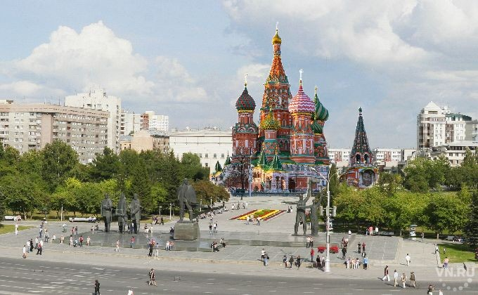
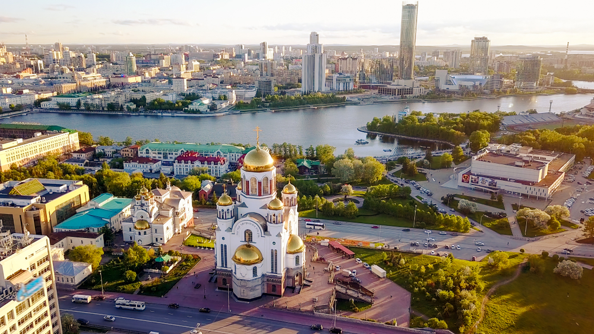
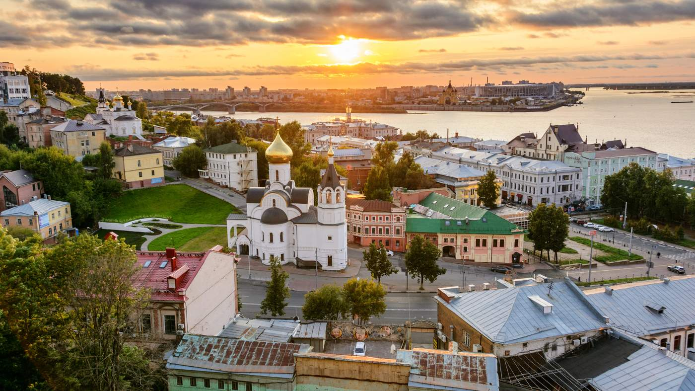
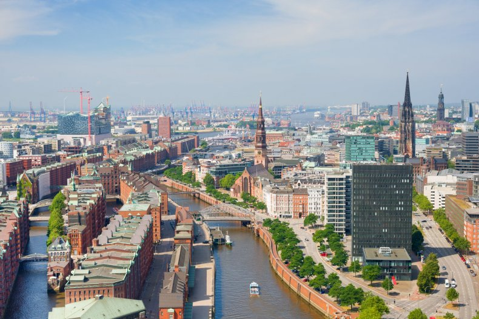
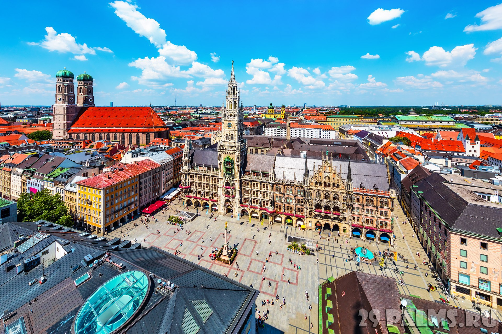
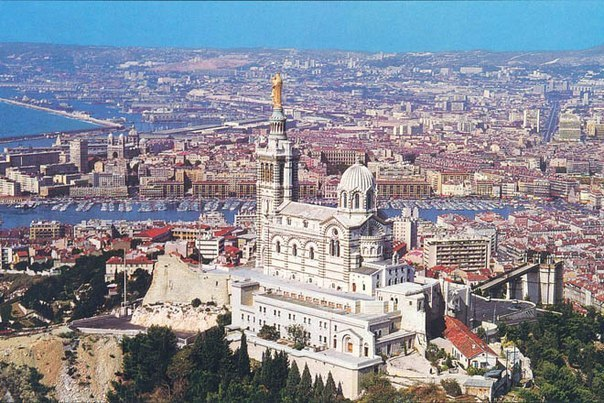
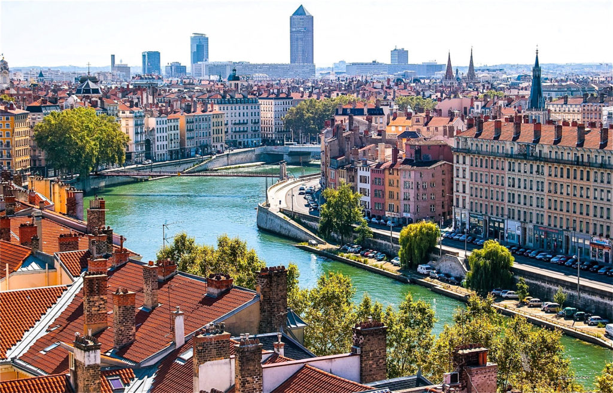
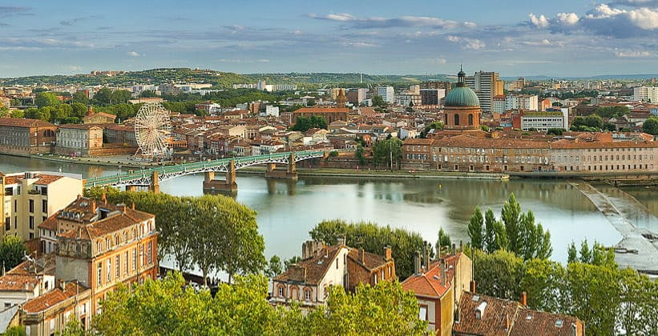
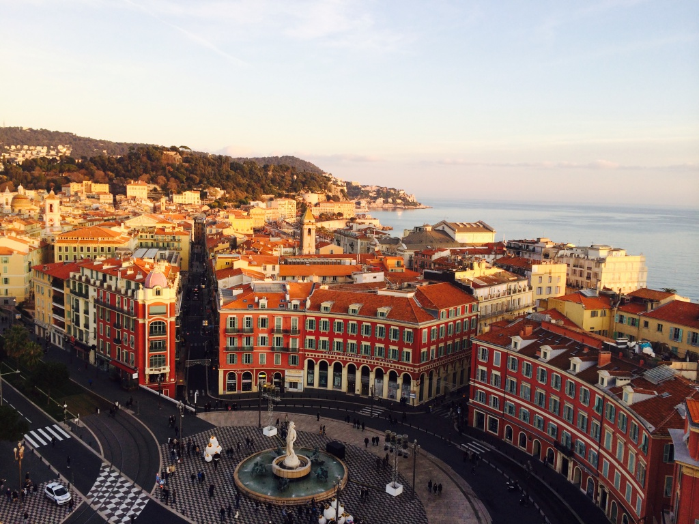

- Росія
-
Міста Росії за кількістю населення:
-
Москва
Населення: 10 509 000

-
Санкт-Петербург
Населення: 4 581 854
-
Новосибірськ
Населення: 1 390 513
 -
Єкатеринбург
Населення: 1 335 000
 -
Нижній Новгород
Населення: 1 280 355

-
Москва
- Німеччина
-
Міста Німеччини за кількістю населення:
-
Берлін
Населення: 3 404 037
-
Гамбург
Населення: 1 754 182
 -
Мюнхен
Населення: 1 294 608
 -
Кельн
Населення: 989 766
-
Берлін
- Франція
-
Міста Франції за кількістю населення:
-
Париж
Населення: 2 243 833
-
Марсель
Населення: 850 726
 -
Ліон
Населення: 484 344
 -
Тулуза
Населення: 441 802
 -
Ніцца
Населення: 343 304

-
Париж
- Велика Британія
-
Міста Великої Британії за кількістю населення:
-
Лондон
Населення: 7 556 900

-
Бірмінгем
Населення: 1 010 000
-
Лідс
Населення: 767 100
-
Шеффілд
Населення: 530 300
-
Бредфорд
Населення: 497 400
-
Лондон
- Італія
-
Міста Італії за кількістю населення:
-
Рим
Населення: 2 870 493

-
Мілан
Населення: 1 331 586
-
Неаполь
Населення: 989 598
-
Турин
Населення: 899 291
-
Палермо
Населення: 676 527
-
Рим
Країни Європи за кількістю населення: